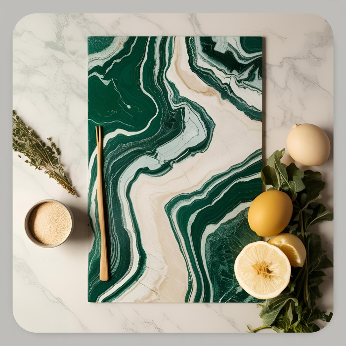

Cazuela de patatas (con pollo)
Descripción
Esta cazuela de patatas con pollo es un plato completo, sabroso y nutritivo.
El pollo aporta proteínas magras de alta calidad, mientras que las patatas y zanahorias ofrecen energía, fibra y vitaminas como la A, B6 y C.
Las almendras y verduras añaden minerales como el potasio, fósforo y hierro, haciendo de esta receta una opción equilibrada y reconfortante.
Ingredientes
- Medio pollo troceado
- Pan (una rebanada)
- Almendras
- 1 tomate
- 1 pimiento
- 1 cebolla
- 1 ó 2 dientes de ajo
- Patatas (1 kilo aprox.)
- Zanahorias 2 ó 3
- Laurel
- Pimiento molido (para el sofrito), una cucharadita
- Azafrán
- Pimienta molida (o 4 ó 5 pimientas en grano para el mortero, opcional)
- Sal
- Aceite
- Vino 200 ml
- agua (1,8 l. aprox.)
Pasos
- En una sartén con un poco de aceite, freir las almendras, el ajo y el pan.
- Una vez el pan esté frito, lo dejamos en un recipiente con agua hasta que se ablande.
- Luego, si hemos optado por las pimientas en grano, las machacamos en el mortero junto a las las almendras, el ajo y el pan remojado.
O trituramos todo en la batidora en vez del mortero. - Se reserva esta mezcla para añadirlo al final, un poco antes de apartarlo del fuego.
- Mientras tanto, en la cacerola morear un poco la carne, retirar y la dejamos reservada en otro recipiente.
- En la misma cacerola, hacer el sofrito (tomate, pimiento, cebolla, ajo).
- Añadir el pimentón molido un poco antes de apartar el sofrito, a fuego más suave. Si tiene mucho aceite, se le quita un poco. Se tritura el sofrito por la batidora y se vuelve a añadir a la cacerola.
- Añadir la carne al sofrito ya triturado y hervir un poco. Añadir el vino y dejar evaporar unos minutos, después añadir el agua y el laurel. Dejamos hirviendo a fuego medio hasta que el pollo esté casi hecho.
- Cuando el pollo ya casi está se le echan las patatas (chascadas), el azafrán y la pimienta si es molida.
- Por último, cuando las patatas estén tiernas se le añade la mezcla de almendras que tenemos reservada.
- Se deja cocer un poco a fuego suave, solo unos minutos hasta que la salsa esté a nuestro gusto, esta mezcla se vuelve espesa muy rápido y se puede quemar. Retirar